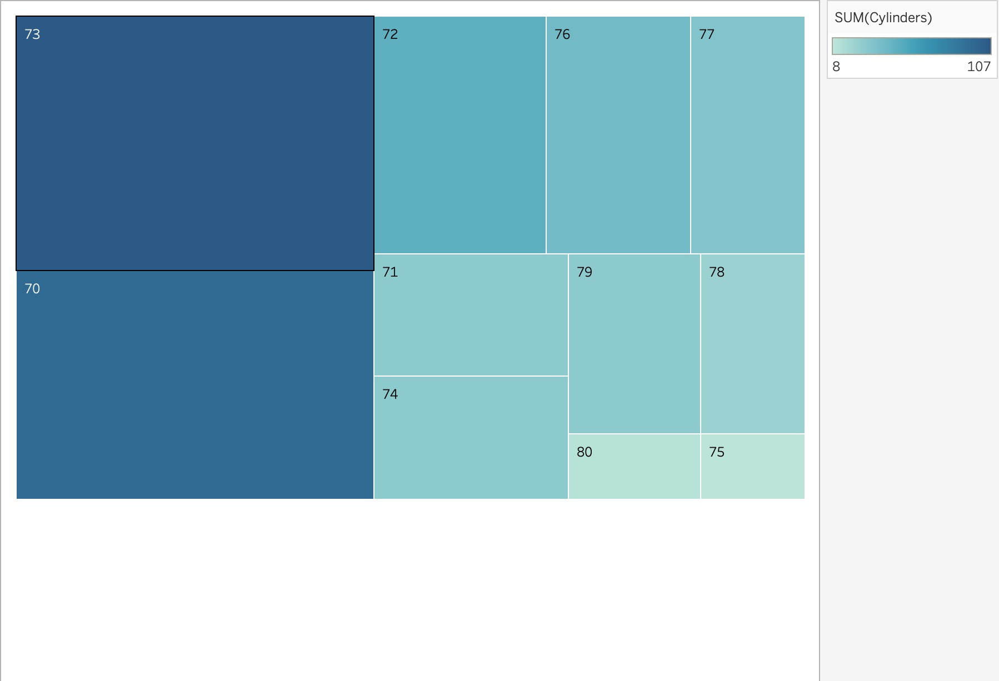

Below, you'll find three different visualizations (Bar Chart, Dot Plot, and Heatmap)
implemented in both p5.js and Tableau, all loading data from a CSV file.
We use the cars.csv dataset, which includes columns like
economy (mpg), cylinders, displacement, power, weight, etc.
p5.js Version:
View Bar Chart in VizHub
(If you have a local p5.js sketch, you could also provide a link or embed it here.)
Tableau Version:
Below is a screenshot of my Bar Chart created in Tableau.
Explanation: This bar chart uses economy (mpg) as a single variable
and shows each vehicle model on the x-axis. The p5.js version reads the cars.csv
file using loadTable() and draws a bar for each row. In Tableau, I've
done the same by placing name on the Rows and economy (mpg) on the Columns,
selecting a Bar Mark type.
p5.js Version:
View Dot Plot in VizHub
(Alternatively, link to your own GitHub Pages or local p5 sketch.)
Tableau Version:
Explanation: The dot plot also uses the same cars.csv data,
but we represent each car's economy (mpg) as a single dot
on a horizontal axis. In Tableau, I placed name on Rows and
economy (mpg) on Columns, then changed the Mark to Circle.
This meets the B-level requirement of having a dot plot for the same variable.
p5.js Version:
View Heatmap in VizHub
Tableau Version:

Explanation: This heatmap aggregates the data by
year and cylinders, showing the average
economy (mpg) in color. In my p5.js code, I use
table.getNum(r, 'year') and table.getNum(r, 'cylinders')
to group the data, then compute the average mpg. In Tableau, I put
year on Rows and cylinders on Columns, dragged
economy (mpg) to Color, and selected Heat Map.
This meets the A-level requirement.
I also used a log scale in the Dot Plot p5.js example to handle the range of weights. Additionally, we incorporated tooltips (hover interaction) in the bar chart p5.js code, so when you hover over a bar, it shows details like car name and mpg. Check out the sketches above!
Hosted on GitHub Pages: